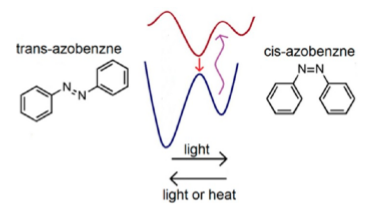
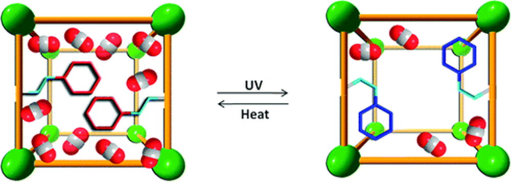

Photo-isomerization is a kind of photoexcitation in which the molecule changes structure between isomers. This process can be both reversible and irreversible. This special property of some molecules can be applied to practical uses like molecular switches in Metal Organic Frameworks (MOFs), protein probes, molecular machines , etc.
Metal Organic Frameworks are comprised of two major components, metal ions and organic molecules which are usually called linkers. Metal ions and linkers can be coordinated in a way that they form a porous material. These porous materials can be used to store gas. If azobenzenes are used as linkers, by changing the isomerization of azobenzene we can either release the gas from the pores or create space for gas adsorption.
